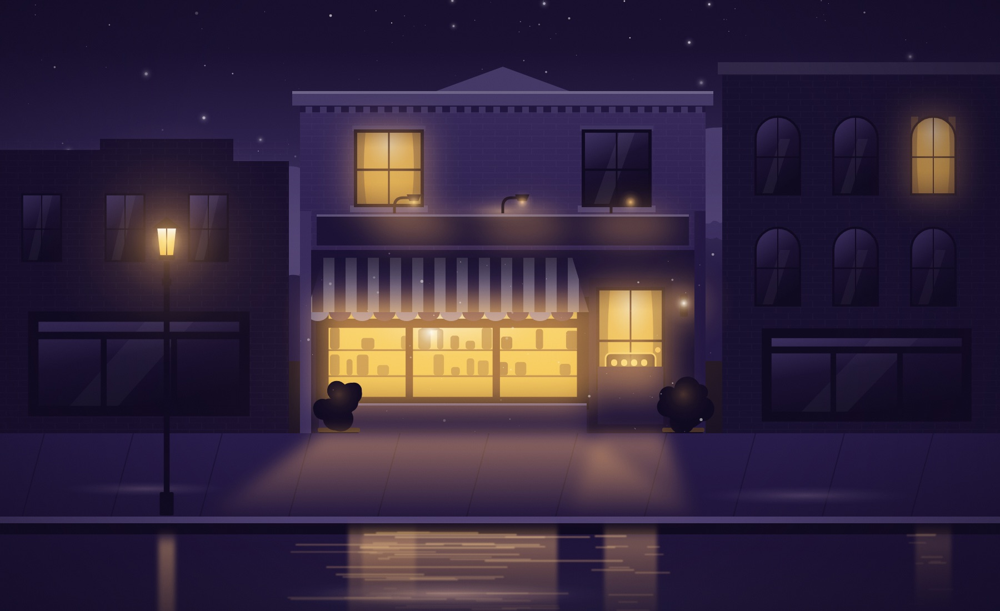
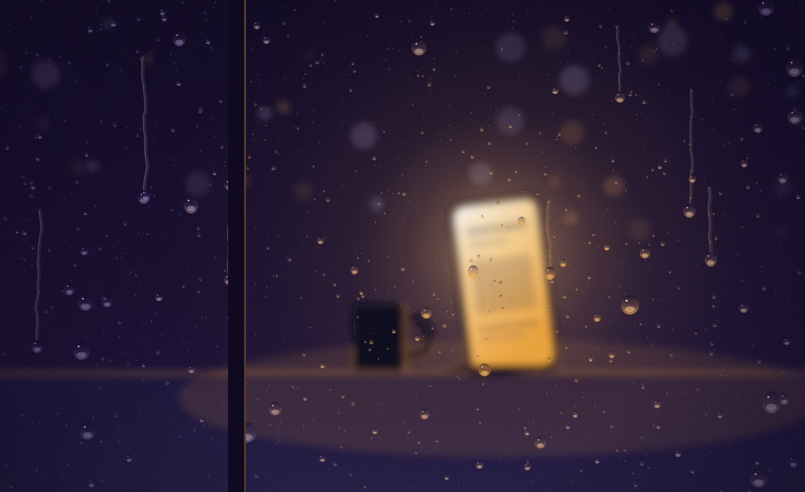
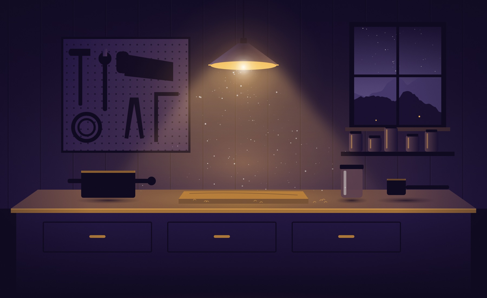
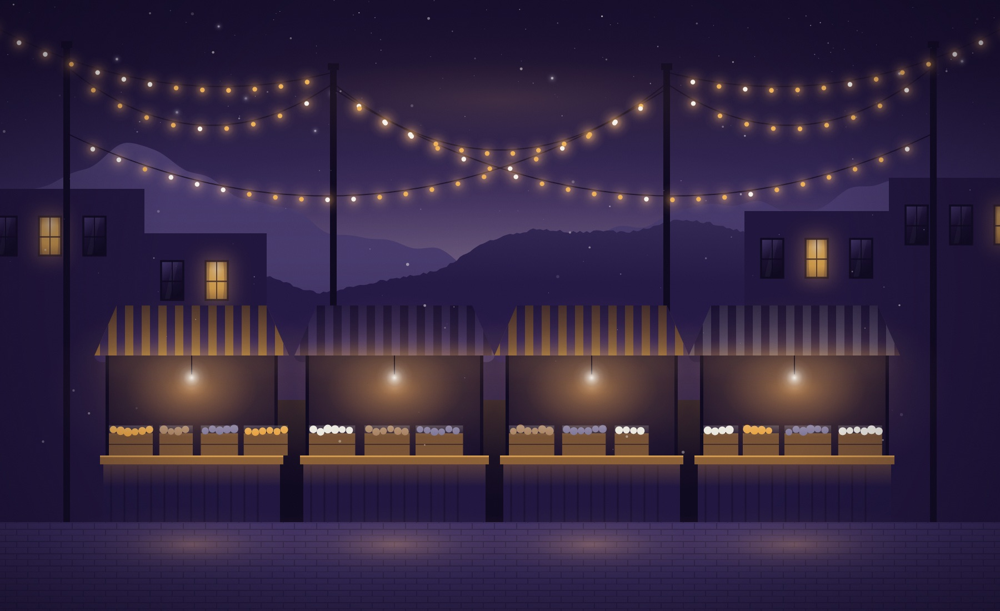
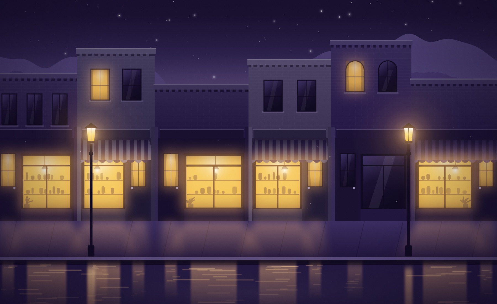

01 / 05Open when the sign says open. Be there at the time you said, not twenty minutes after.

02 / 05When the phone rings, answer it. If you can't, call back the same day.

03 / 05Things go wrong in every business. People remember what you did next.

04 / 05Their name, their usual, the dog's name. It costs nothing and they notice every time.

05 / 05Tomorrow, and the day after that. There's no step six.